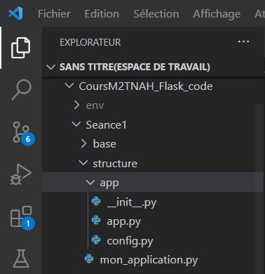
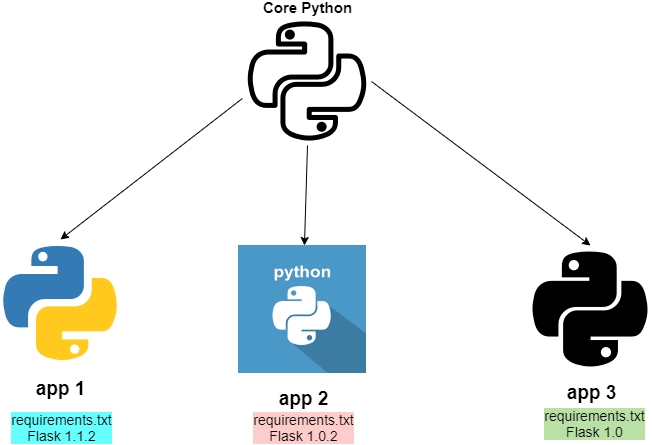
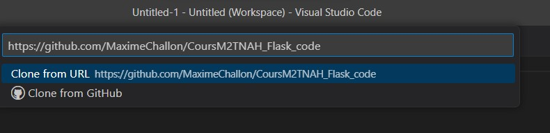
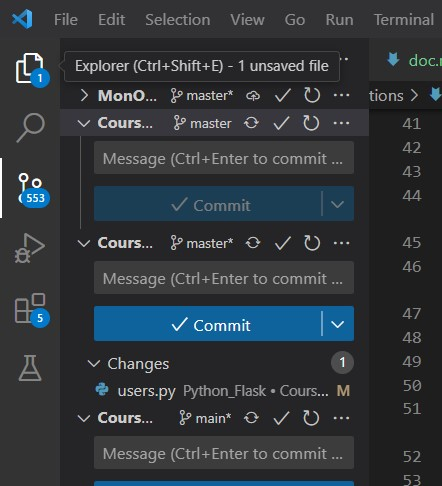

Télécharger le fichier .deb sur le site suivant : https://code.visualstudio.com/download.
Dans un terminal, aller dans le dossier dans lequel le fichier a été téléchargé (normalement Downloads ou Téléchargements).
Exemple: cd Downloads
Une fois dans ce dossier, exécuter la commande suivante: sudo dpkg -i code_*.deb
Pour lancer VSCode, deux solutions:
code. Ne pas clore le terminal, sinon l'application se fermeSuivre les explications suivantes : https://adamtheautomator.com/visual-studio-code-on-mac/.
Télécharger le fichier pour Windows sur le site suivant (cliquer sur le gros bouton bleu Windows) : https://code.visualstudio.com/download.
Une fois téléchargé (dans les Téléchargements normalement), double-cliquer sur le fichier VSCodeUserSetup-{version}.exe et suivre les instructions.
VSCode est un éditeur de code léger (par rapport à d'autres logiciels comme PyCharm), agréable et très fonctionnel (ce qui le différencie de NotePad, Vim et autres éditeurs de texte). Il permet entre autres fonctionnalités d'afficher les dossiers et leurs enfants, et d'éditer différents types de fichiers (colorés syntaxiquement selon le langage défini/détecté). Il permet également de travailler en équipe grâce à son intégration graphique de Git.
Note: pour exécuter le code de l'application Flask, il est préférable d'utiliser un terminal avec l'environnement virtuel activé (voir plus bas); VSCode n'est qu'un éditeur de code, utiliser son terminal intégré fait prendre le risque de ne pas travailler dans son environnement virtuel.
Pour travailler dans le dossier de l'application en cours de développement, il est possible de l'afficher dans l'espace à gauche.

Pour l'afficher, aller dans Fichier > Ouvrir le dossier , puis sélectionner le dossier souhaité. Ce dossier, avec toute son arborescence, s'affiche alors dans l'Explorer.
Installer la dernière version de Python avec sudo apt-get install python3.
Installer pip: sudo apt install python3-pip
Télécharger l'installer Python pourr Mac ici: [https://www.python.org/ftp/python/3.11.1/python-3.11.1-macos11.pkg][https://www.python.org/ftp/python/3.11.1/python-3.11.1-macos11.pkg]
Une fois téléchargé, aller dans les Téléchargements et double-cliquer sur le fichier .pkg qui vient d'être téléchargé. Suivre ensuite les instructions.
Installer pip avec python3 -m ensurepip. Si cela ne fonctionne pas, suivre les instructions suivantes via get-pip.py: https://phoenixnap.com/kb/install-pip-mac.
Télécharger sur https://www.python.org/downloads/windows/ le Windows Installer 32bit ou 64bit selon votre machine.
Dans les Téléchargements, double-cliquer sur l'exécutable et suivre les instructions. Bien sélectionner l'ajout de Python dans le PATH.
Dans le cas normal, Python s'installera dans le répertoire suivant: C:\Users\nom_user\AppData\Local\Programs\Python\Python311. Dans le répertoire Scripts, il devrait y avoir l'exécutable suivant: pip3.exe. Si pip n'y est pas, suivre les instruction suivantes : https://phoenixnap.com/kb/install-pip-windows.
Avant de commencer le développement de tout projet Python, il convient d'installer un environnement virtuel spécifique à ce projet (un vase clos dans lequel seul le projet s'exécutera). Il est courant d'avoir plusieurs projets en cours de développement sur sa machine, or chaque projet peut utiliser des versions différentes des packages Python. Pour éviter les erreurs sur les packages, l'environnement virtuel est essentiel.

Hors d'un environnement, la commande which python (ne fonctionne pas sur Windows) indiquera l'installation globale de Python sur la machine.
which python
L'installation d'un environnement virtuel pour un projet Python se fait en plusieurs étapes, et dans le dossier racine de notre projet.
# dans un terminal, effectuer les étapes suivantes
# installation du package virtualenv, si ce n'est pas déjà fait, dans le Python global de la machine
pip install virtualenv
# on s'assure ensuite que l'on est dans le dossier racine de l'application
pwd
# si ce n'est pas le cas, y aller
cd dossier_racine/
# installation de l'environnement
virtualenv env -p python3
Les étapes d'installation ne sont à réaliser qu'une seule fois. Une fois l'environnement installé, il suffit de l'activer/désactiver au début et à la fin de chaque séance de développement. Les packagaes installés quand on est dans l'environnement resteront dans cet environnement et n'auront pas d'interférence avec le reste de la machine.
# pour activer l'environnement:
# Ubuntu
source env/bin/activate
# Mac OS
source env/bin/activate
Une fois activé, (env) apparaît au début de chaque ligne du terminal: c'est l'assurance que l'on travaille dans cet environnement. Pour s'assurer définitivement que l'on a bien un Python dédié au projet, on peut relancer un which python.
which python
Pour désactiver l'environnement, il suffit d'exécuter la commande deactivate.
# dans PowerShell ou le cmd, effectuer les étapes suivantes
# installation du package virtualenv, si ce n'est pas déjà fait, dans le Python global de la machine
C:\Users\nom_user\AppData\Local\Programs\Python\Python311\Scripts\pip3.exe install virtualenv
# on s'assure ensuite que l'on est dans le dossier racine de l'application
pwd
# si ce n'est pas le cas, y aller
cd dossier_racine/
# installation de l'environnement
C:\Users\nom_user\AppData\Local\Programs\Python\Python311\Scripts\virtualenv.exe env -p python3
Les étapes d'installation ne sont à réaliser qu'une seule fois. Une fois l'environnement installé, il suffit de l'activer/désactiver au début et à la fin de chaque séance de développement. Les packagaes installés quand on est dans l'environnement resteront dans cet environnement et n'auront pas d'interférence avec le reste de la machine.
# pour activer l'environnement:
# Windows
source env/Scripts/activate
Une fois activé, (env) apparaît au début de chaque ligne du terminal: c'est l'assurance que l'on travaille dans cet environnement.
Pour désactiver l'environnement, il suffit d'exécuter la commande deactivate.
sudo apt install git
Télécharger le packet binaire au lien suivant: https://sourceforge.net/projects/git-osx-installer/.
Dans les téléchargements, double-cliquer sur l'installeur de Git et suivre les instructions.
Télécharger le Standalone Installer 32 ou 64-bit disponible sur le site https://git-scm.com/download/win.
Aller dans les Téléchargements et lancer l'installeur de Git. Suivre les instructions.
Dans VSCode, avec la commande CTRL + SHIFT + P, la Command Palette s'ouvre. Sélectionner Git: clone et y entrer le lien vers le dépôt Github à cloner.

Une fenêtre de connexion à son compte Git peut peut-être s'afficher. Ensuite, VSCode demande de sélectionner le dossier dans lequel cloner le répertoire distant.
Ces étapes reviennent à faire un git clone http://repertoire.git dans le terminal à l'endroit voulu. Le faire avec VSCode permet d'ajouter directement le répertoire dans le Workspace, et d'avoir les fonctionnalités Git associées directement dans l'éditeur de code.
